Tutorial¶
STEP1. 물품싸이트 로그인확인¶
홈페이지 상단에 로그인 여부를 확인합니다
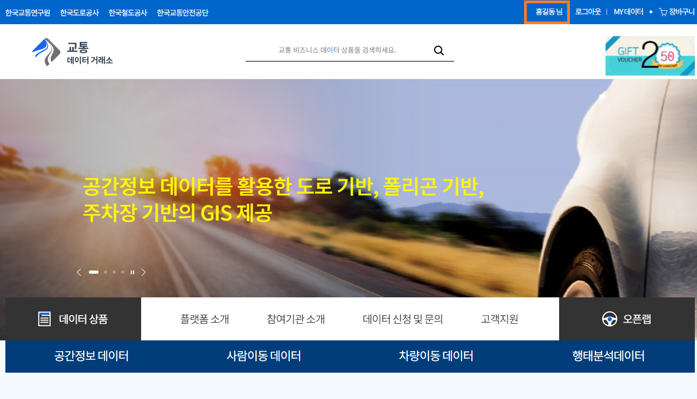STEP2. 데이터상품 구매 하기¶
상단의 메인 검색 입력란에 “VDS콘존별”을 입력하고 “검색”버튼을 클릭합니다
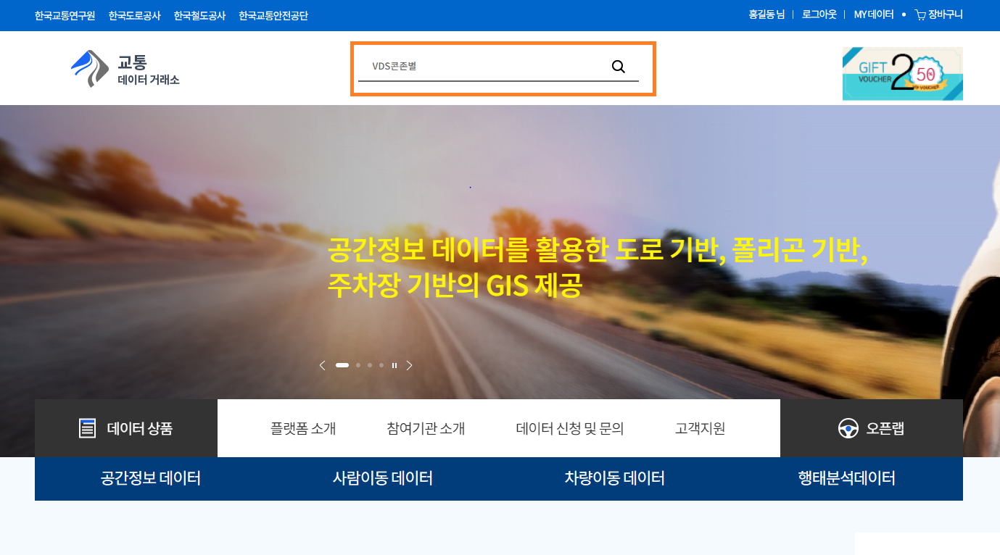“VDS콘존별”이 검색이 되는지 확인합니다
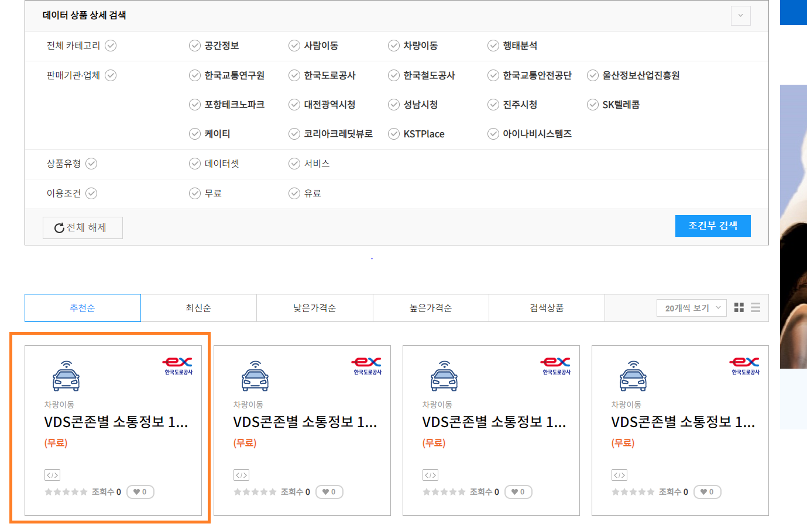“VDS콘존별 소통정보 1시간 통계” 상품을 클릭하여 상품 상세정보를 확인합니다
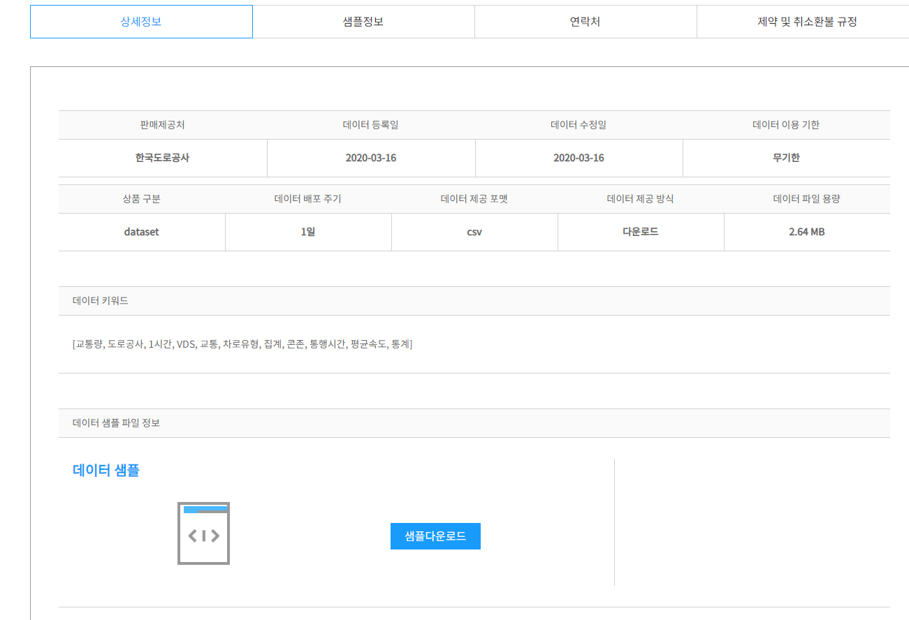상세정보에서 “데이터 이용하기” 실행 > “결제하기 ” 실행 > “나의 거래정보” 선택 실행 후 구매내역을 확인합니다
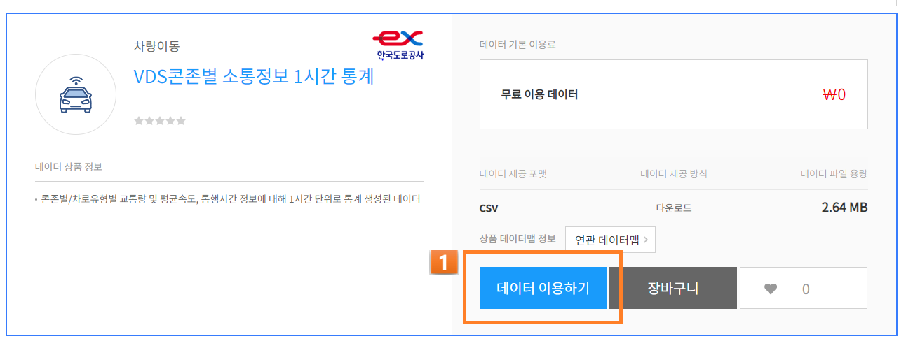 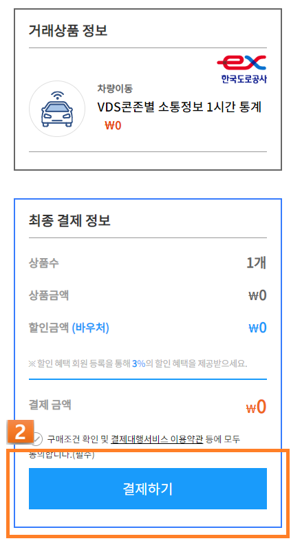 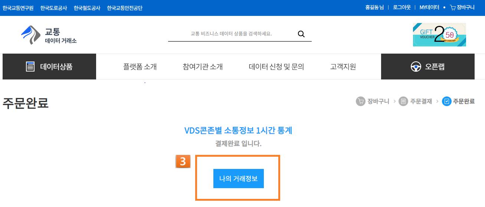 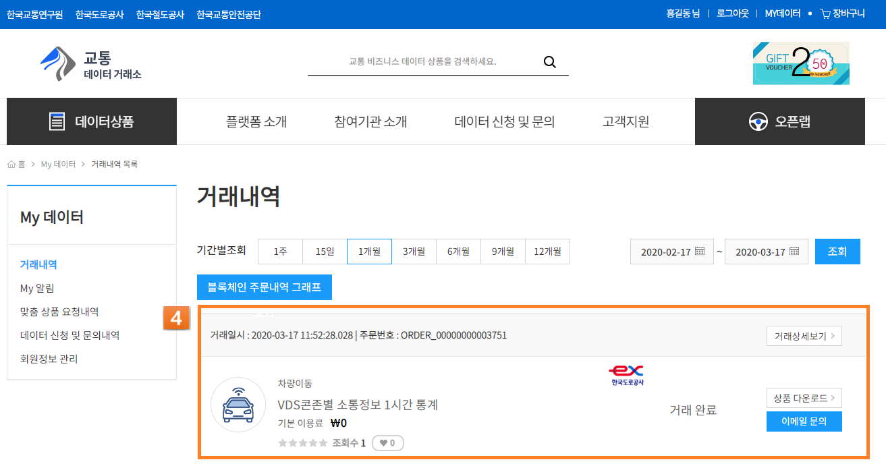STEP4. 물품에 대해 분석 데이터 신청¶
메인메뉴를 클릭하여 나타난 메뉴에서 오픈랩데이터 > 데이터셋 목록 메뉴 실행 후 “분석신청” 버튼을 클릭합니다
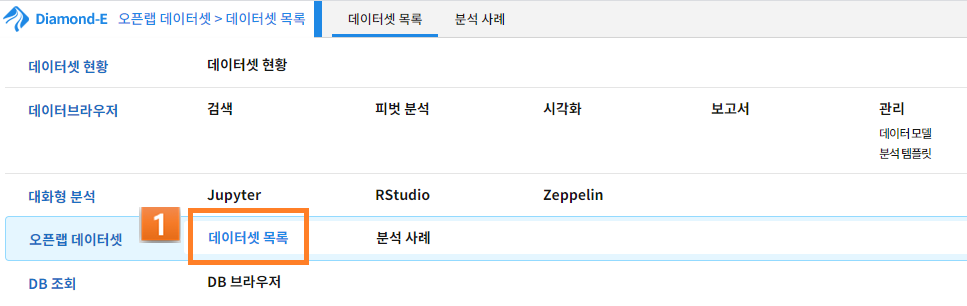 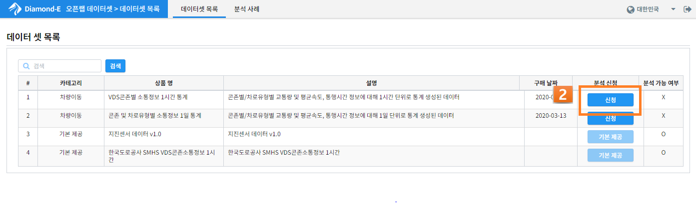“분석신청” 버튼을 클릭했을때 아래의 그림과 같이 분석 가능여부가 O로 나타나게 됩니다
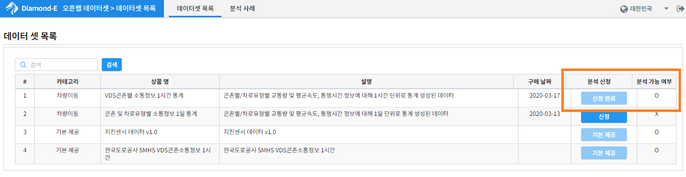상단의 메인 검색 입력란에 “VDS콘존별”을 입력하고 “검색”버턴을 클릭하여 실행합니다
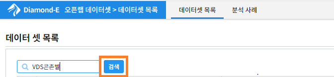아래의 그림과 같이 분석 가능 여부가 o로 나타나면 “VDS콘존별” 상품에에 대해 분석신청이 가능합니다
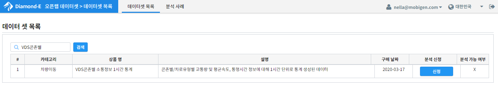STEP5. 물품에 대해 데이터 모델 설정¶
메인메뉴를 클릭하여 나타난 메뉴에서 데이터 브라우저 > 관리 > 데이터모델 메뉴를 선택하여 실행합니다
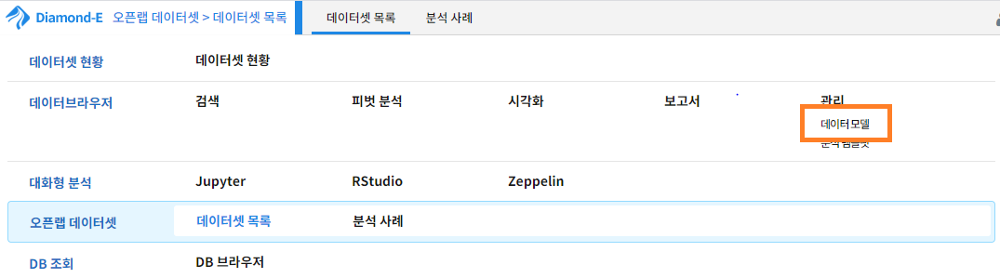“VDS콘존별 소통정보 1시간 통계_xxx” 모델의 “편집” 항목을 선택하여 실행합니다(다양하고 정확한 정보를 확인하고자 할 경우 설정)

“시간” 정보 설정에 “LAST_CHANGE_TIME” 컬럼 선택합니다

전체선택 버튼을 클릭하여 모든 컬럼을 선택합니다

교통량, 평균속도,통행시간, 정상건수, 보정건수등 숫자 값에 대해 맞는 타입 (INTEGER , REAL)으로 변경합니다

집계일자 컬럼의 “별칭” 입력란에 “년월일”을 입력합니다

STEP6. 물품에 대해 데이터 검색 하기¶
메인메뉴를 클릭하여 나타난 메뉴에서 데이터브라우저 > 검색 메뉴 선택을 실행합니다
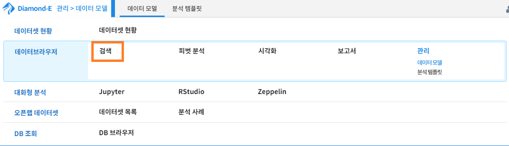데이터 모델 리스트에서 “VDS콘존별 소통정보 1시간 통계_xxx” 모델을 선택합니다

시간설정 탭에서 전체시간을 선택합니다

“실행” 버튼을 클릭하여 조회합니다

“CONZONE_ID”컬럼을 클릭하여 나타난 추가 메뉴에서 “검색에 추가” 선택하여 실행합니다


검색어 입력값을 모두 지우고 “실행”버튼 클릭하여 조회합니다

STEP7. 물품에 대해 시각화 하기¶
메인메뉴를 클릭하여 나타난 메뉴에서 데이터브라우저 > 시각화 메뉴 선택을 실행합니다
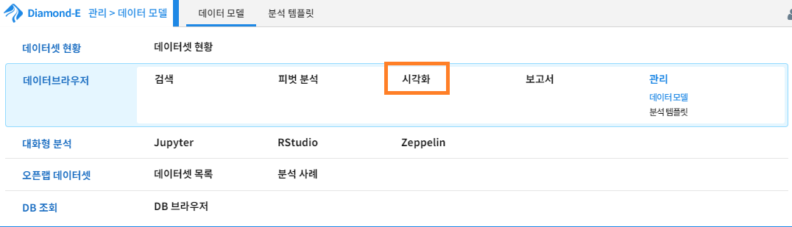분석유형에서 “막대형”을 선택합니다

X축에 “CONZONE_ID” 컬럼을 마우스로 드래그하여 설정합니다

Y축에 “PASSING_TIME_MEAN” 컬럼을 마우스로 드래그하여 설정합니다

“실행” 버튼을 클릭하여 시각화 실행합니다

분석유형에서 “원형”을 선택 합니다

크기에 “PASSING_TIME_MEAN” 컬럼, 그룹에 “CONZONE_ID” 컬럼을 마우스로 드래그하여 설정합니다

“실행” 버튼을 클릭하여 시각화를 실행합니다

“파일저장” 버튼을 클릭하여 이미지 파일로 저장합니다

꺽은선형 차트, 히스토그램 차트, Sankey 차트, 시계열 분포 차트, 히트맵 차트, 모션 차트, 이상치 차트, 클러스터맵도 제공 하고 있으며, 위와 동일하게 진행하면 다양한 시각화화면을 볼수 있습니다

STEP0. 오픈소스 분석도구 이용하기¶
대화형분석 > Jupyter 메뉴를 실행합니다
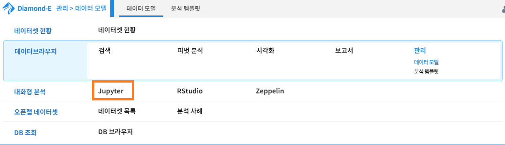아래의 그림과 같이 Jupyter화면이 나타나는지 확인합니다
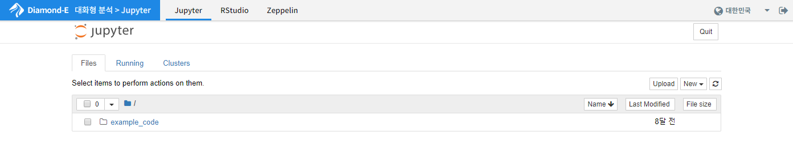대화형분석 > RStudio 메뉴를 실행합니다
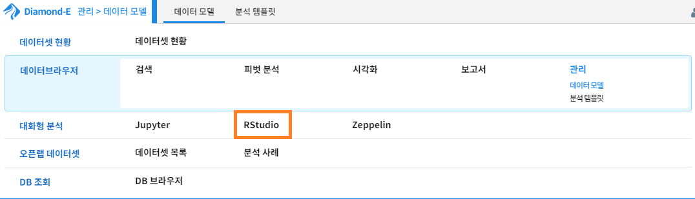아래의 그림과 같이 RStudio화면이 나타나는지 확인합니다
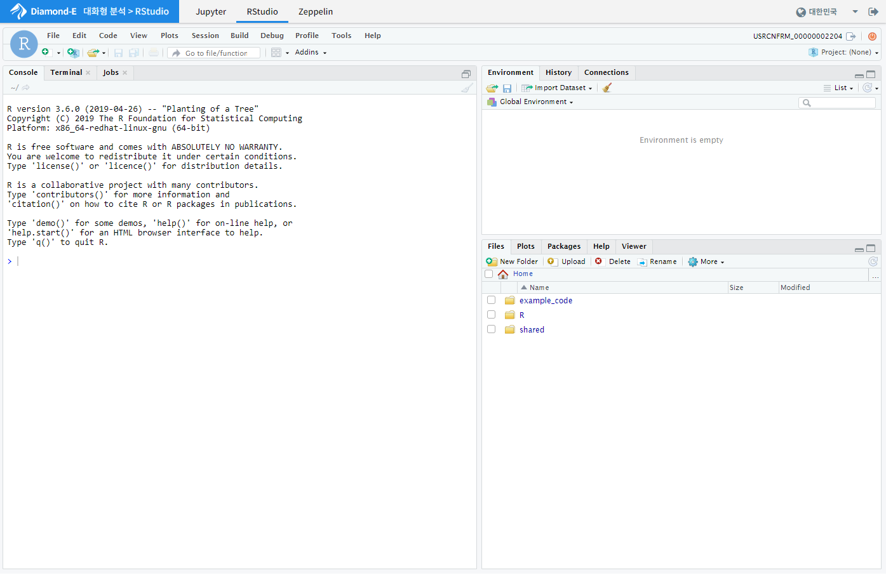대화형분석 > Zeppelin 메뉴를 실행합니다
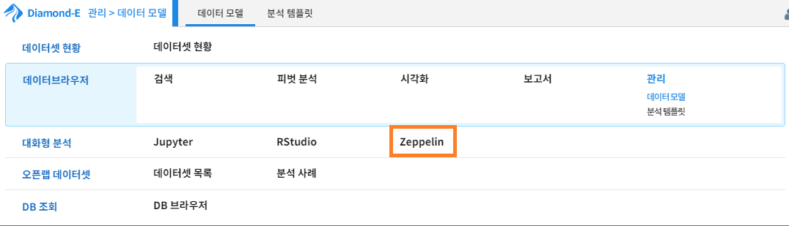아래의 그림과 같이 Zeppelin화면이 나타나는지 확인